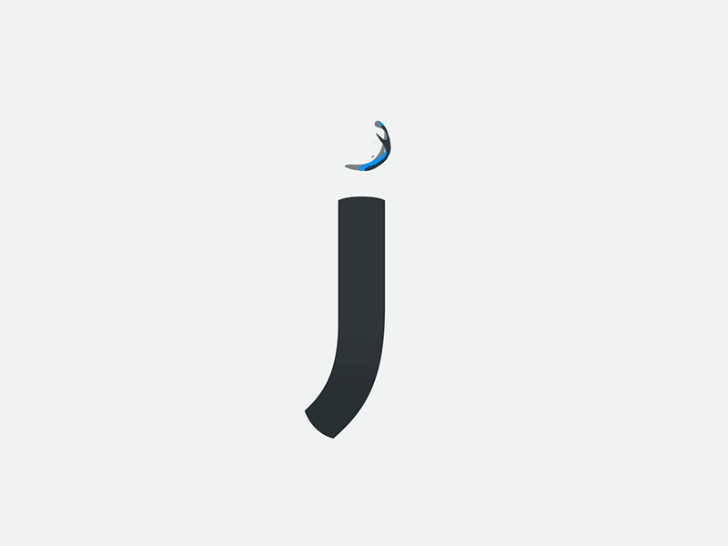
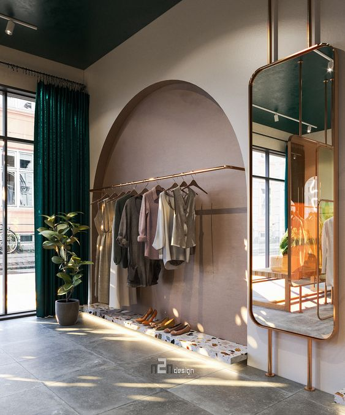
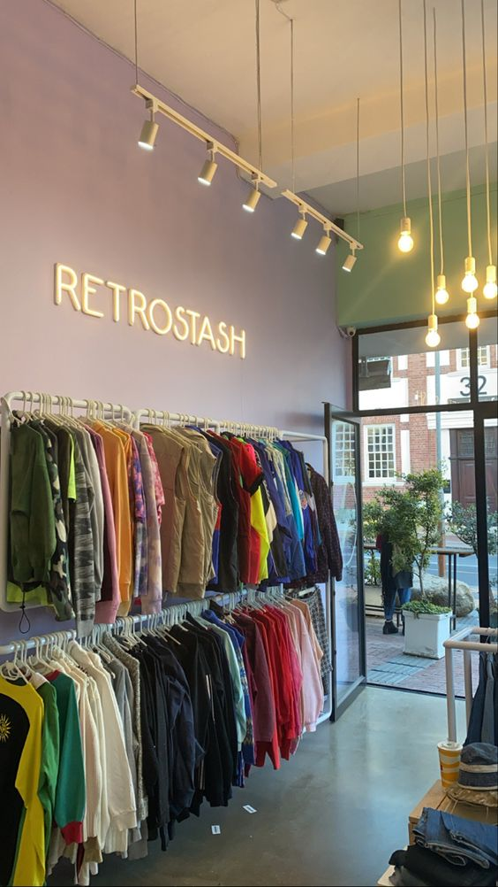

History
juliere.co merupakan sebuah brand yang didirikan oleh Adiyatma Pratama Wibisono pada tahun 2022
yang berawal dari kegelisahan seorang mahasiswa dalam mencari pundi-pundi rupiah. Pada awalnya juliere.co
beroperasi dengan berjualan baju-baju kaos streetwear design yang dijual secara digital dan membeli barang pada supplier
dikarenakan pada saat itu belum mampu membeli alat untuk produksi baju. juliere.co berjalan selama hampir
4 tahun bahu membahu membangun bisnis dengan harapan dapat menjadi sebuah brand besar dunia yang dapat menyaingi
para kompetitornya yang sudah terkenal lebih dahulu.
Kini juliere.co telah berkembang menjadi sebuah brand ternama internasional yang membawa nama harum Indonesia
dengan produk-produk yang dijualnya berhasil meraih tingkat penjualan produk tertinggi se-Asia Tenggara pada tahun 2027 bulan Desember.
Kedepannya juliere.co akan terus berinovasi untuk menciptakan desain-desain baru dan unik dan produk-produk lainnya yang
bermanfaat untuk kebutuhan sehari-hari serta berkolaborasi dengan banyak mitra nasional seperti Gojek & Tokopedia (GoTo), Erigo, Scarlett Whitening,
Batik Trusmi, Paragon Corp., RANS, dan yang lainnya untuk dapat mengharumkan nama bangsa tercinta, NKRI.

Our Design
Kami memiliki berbagai macam design mengikuti pasar yang terus bergerak setiap harinya
bagaikan ombak yang akan terus mengombang-ambing lautan. Kreativitas tidak akan ada batasnya
dan akan terus berkembang seiring berkembangnya zaman. Sebuah desain pun tidak pernah mengalami
penuaan hingga pada masanya suatu tema desain akan kembali trendy pada zamannya.
Desain utama juliere.co mengikuti sejarah awalnya yaitu Streetwear Design
yang kerap banyak digemari oleh kalangan muda dari usia 16 hingga 25 tahun. Tapi suatu style
tidak pernah memandang umur lho!. Berikut adalah beberapa desain dari produk juliere.co.

Store
Toko pertama yang berhasil dibangun juliere.co ada pada kota Bandung tepatnya di Jl. Dago No A.13. Dan selanjutnya
juliere.co terus berkembang dengan membangun beberapa cabang pada pusat perkotaan yang ramai.
Dago juliere.co Store Bandung

Berada di jalur utama Bandung-Dago, menjadi toko pertama juliere.co yang tidak
pernah sepi pengunjung. Selain karena letaknya yang strategis, kawasan ini juga
dikelilingi oleh berbagai store pakaian ternama. Belum lagi bangunannya yang didesain secara khusus
untuk berfoto (Instagramable).
Tanah Abang juliere.co Store Jakarta

Toko juliere.co pertama yang dibangun di Ibu Kota Jakarta. Sebuah gebrakan baru membawa juliere.co
bangkit menjadi brand ternama dengan diletakkannya toko kedua kami di Jakarta. Menjadi pakaian favorit yang dibeli
oleh pemuda-pemudi Jakarta.